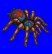
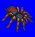
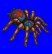
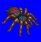

Height: 1-60 cm Weight: < 1 - 65 lbs.
Habitat: Forest, cave Origin: Tropical areas
Meaning: ???
There are about 35000 different species of spider in existence today. Among those, about 800 are subtypes of tarantula. Tarantulas produce poison in order to kill its prey, typically insects, but the poison is capable of killing a human. However, there have been no reports of human death as a result of a tarantula bite in over 20 years. Other spiders, such as the black widow, can cause serious harm to humans with their poisons.